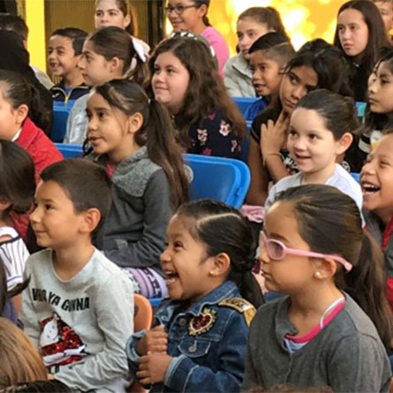
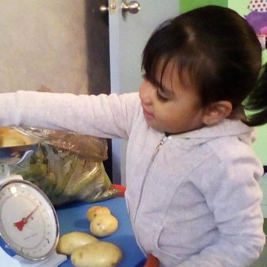
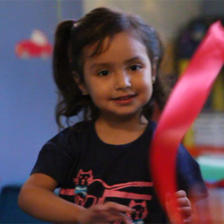
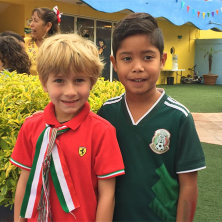
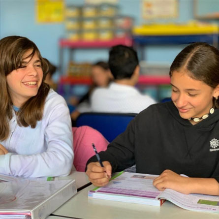

Oferta educativa
Formación integral
Los primeros años de vida son fundamentales en el proceso de aprendizaje, de ahí que, durante maternal, preescolar y primaria trabajamos en:
- La autoestima y formación de identidad.
- Estímulos concretos para el desarrollo intelectual.
- Apoyo en juegos como método de exploración y fomento al aprendizaje.
- Promover hábitos de limpieza, orden y adaptabilidad.
- Estimulación del lenguaje, gusto por la lectura y la escritura.
- Creación de escrituras sólidas para la expresión
Maternal
Trabajamos de materia integral con nuestros pequeños en su tarea de explorar el mundo más allá de ellos mismos.
Partimos de una sana convivencia entre compañeros como parte de su adaptación a un ambiente social, pero, a la vez les apoyamos en su camino a la independencia.
Propiciamos el contacti cib nareruakes cibcretis, el movimiento físico y las dinámicas sensoriales como parte fundamental de su desarrollo intelectual.
Esta etapa es propicia para hacer pequeñas modificaciones mentales que logren cambiar y a la vez formar hábitos.
Preescolar
Diseñamos nuestros programas basados en un modelo de la Educational Improvement Management, una alianza internacional de profesionales que brindan servicios educativos.
Iniciamos con un diagnóstico práctico que permite identificar las aptitudes más consolidadas de los pequeños y conocer sus áreas de oportunidad.
Apoyamos al alumno en la formación de sus representaciones simbólicas a través de materiales concretos como base de su razonamiento lógico matemático mediante bloques lógicos, regletas, ábacos, base 10, entre otros.
Primaria
Partimos de un diagnóstico de habilidades intelectuales de nuestros niños y las desarrollamos basados en la Educational Improvement Management, una alianza internacional de profesionales que brinda servicios educativos.
Apoyamos al alumno en la formación de sus representaciones simbólicas a través de materiales concretos como base de su razonamiento lógico-matemático mediante bloques lógicos, regletas, ábacos, base 10, entre otros.
Durate su proceso vivencial nuestros estudiantes generan seguridad para resolver problemas, son responsables, toman decisiones, adquieren conciencia de sus actos y llegan a conocerse más como personas.
Desarrollamos programas que fomentan el gusto por la lectura mientras que el dominio del idioma inglés permite a los pequeños hacer la certificación Cambridge.
Nuestros talleres favorecen que los alumnos experimenten áreas que les parezcan interesantes y desarrollen sus potencialidades
En tanto que la práctica deportiva es para nosotros no solo un tema de salud, también ayuda en la construcción de: el carácter, el trabajo en equipo, el autocontrol, el respeto por las reglas y la tolerancia a la frustración en la derrota.
Secundaria
Aportamos la experiencia de 30 años, implementando el Modelo Activo, en una etapa que consideramos determinante para el éxito personal.
Damos un seguimiento detallado a la parte intelectual, sin dejar de lado las emociones, la autoestima, la empatía y la dependencia de nuestros alumnos.
Creemos que los conocimientos que deben aprender en esta etapa serán la base para que ellos mismos sean conscientes de lo que son capaces de hacer.